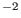
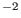

Next: Open ocean scenarios Up: Shelf sea scenarios Previous: Gotland Deep Contents
Here a campaign (REYNOLDS, funded by the German Federal Ministry for
Education and Research, chief-scientist Hans Ulrich Lass, IOW)
in the Eastern Bornholm Basin
(55 35' N, 16
35' N, 16 39' E, mean water depth: 55 m)
is simulated. The simulation period is
August 30, 2001 at 17 h to September 9, 2001 at 14 h.
The water column is characterised by a thermocline at about 25 m depth
and a halocline at about 50 m depth. The simulation period
is charaterised by storms up to 0.2 Nm.
As forcing, surface stress, heat fluxes and solar radiation
has been calculated on the basis of meteorological observations
according to Kondo (1975).
The barotropic pressure gradient has been recalculated
from vertically averaged observed velocity profiles, see section
3.1.1.
As initial conditions, observed temperature, salinity and velocity profiles
are used.
Additionally the vertical velocity at the thermocline has been diagnosed from
temperature observations and is used for vertical advection,
see section 3.1.1.
The turbulent dissipation rate
has been observed during two
sub-periods, such that turbulence model results may be compared with
observations.
39' E, mean water depth: 55 m)
is simulated. The simulation period is
August 30, 2001 at 17 h to September 9, 2001 at 14 h.
The water column is characterised by a thermocline at about 25 m depth
and a halocline at about 50 m depth. The simulation period
is charaterised by storms up to 0.2 Nm.
As forcing, surface stress, heat fluxes and solar radiation
has been calculated on the basis of meteorological observations
according to Kondo (1975).
The barotropic pressure gradient has been recalculated
from vertically averaged observed velocity profiles, see section
3.1.1.
As initial conditions, observed temperature, salinity and velocity profiles
are used.
Additionally the vertical velocity at the thermocline has been diagnosed from
temperature observations and is used for vertical advection,
see section 3.1.1.
The turbulent dissipation rate
has been observed during two
sub-periods, such that turbulence model results may be compared with
observations.
Data files:
| eprof.dat | profiles of observed dissipation rate in Wkg |
| heatflux.dat | surface heat flux and solar radiation in Wm |
| momentumflux.dat | surface momentum flux in Nm |
| pressure.dat | vertically averaged velocity components in ms |
| sprof.dat | profiles of observed salinity in psu |
| sss.dat | time series of sea surface salinity in psu |
| sst.dat | time series of sea surface temperature in |
| tprof.dat | profiles of observed temperature in |
| velprof.dat | profiles of observed velocity components in ms |
| vertvel.dat | profiles of diagnosed vertical velocity at thermocline
depth in ms |
So far, these data have not yet been published.
Karsten Bolding 2012-01-24